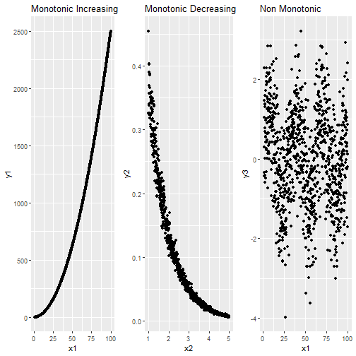

Random Variables
Adam J Sullivan
Assistant Professor of Biostatistics
Brown University
Random Variables
Random Variables
- All the probability we have been working with requires counting.
- We need to be able to count:
- The total elements in the sample space.
- The total elements in the event of interest.
- The total number of ways in which the event of interest can occur.
- You have seen that just with rolling die this can get complicated.
- What happens if we add in more than just the die roll?
In Comes Random Variables
- Random variables are spoken about a lot in probability and statistics.
- They confuse most people because we misunderstand the word variable in this.
- They are key to many things:
- Models for random events.
- Numerical summaries and methods for data.
- Estimators for the population.
- Hypothesis testing.
What is a Random Variable?
- A random variable is a function that takes elements from a sample space and maps them to a real number.
- Consider the Sample Space of 3 coin flips:
\[\Omega = \{hhh, ttt, hht, hth, thh, tth, tht, htt\}\]
Random Variables
- Random variables could be:
- The total number of heads.
- The total number of tails.
- The total number of heads minus the number of tails.
- Each take from coin flips and place a numerical value on them.
Types of Random Variables
- We have 2 main types of random variables
- Discrete
- Continuous
Discrete Random Variables
- A random variable is said to be discrete if it only takes on a finite or countable infinite number of discrete values.
- Note:
- Finite means we can see the end.
- Countably infinite means that even though it doesn't end, we can place a mathematical formula on counting it.
- Like even numbers (
2*k) wherekrepresents the integers.
Discrete Random Variables
- Now we could think of many, many discrete random variables.
- This would be difficult as each scenario would pose different counts and probabilities.
- Each one would have what we call a different distribution, or way in which probability is spread out.
- Instead we focus on common ones that occur in nature.
Discrete Random Variables
- We will consider the following in the course sequence:
- Bernoulli
- Binomial
- Poisson (Introduced in the Spring)
Bernoulli Random Variable
- In Bernoulli trial we have only two outcomes possible:
- Success
- Failure
- We then know the following probabilities
- Success:
p - Failure:
1-p
- Success:
- We would then call this scenario a bernoulli random variable with paramater
p. - This has a probability mass function:
\[ Pr(X=k) = p^k(1-p)^{1-k}\]
Binomial Random Variable
- Consider if you have \(n\) people each with probability
pof having a success. - This would then be a binomial random variable with parameters
nandp. - This would then have a probability
- This has a probability mass function:
\[ Pr(X=k) = \binom{n}{k}p^k(1-p)^{n-k}\]
Properties of Discrete Random Variables
- Probability Mass Functions
- Cumulative Distribution Functions
- Expectations
- Mean
- Variance/Standard Deviation
Probability Mass Functions
- A probability mass function has common properties across all discrete distribution:
- Let \(p\) be a probability mass function, then
- \(p(k)\ge0\) for all \(k\)
- \(\sum_k p(k) =1\)
- Then each discrete distribution has a different probability mass function that can be described by the story behind in.
Bernoulli Probability Mass Function
- Consider the Bernoulli where it only takes on 2 values.
- Success (1) with probability \(p\)
- Failure (0) with probability \(1-p\)
- Then the PMF is:
\[ Pr(X=k) = p^k(1-p)^{1-k}\]
Bernoulli PMF
- Consider if we sum over all values of \(k=0,1\):
\[\sum_{k=0}^1 = p^0(1-p)^{1-0} + p^1(1-p)^{1-1} = (1-p) + p = 1\]
Binomial PMF
- The Binomial PMF is:
\[ Pr(X=k) = \binom{n}{k}p^k(1-p)^{n-k}\]
- Part of this looks familiar since it is similar to the Bernoulli.
- \(\binom{n}{k}\) is how many ways there are to order the \(k\) successes.
- \(p^k\) is because it trial is independent so we multiply all \(k\) successes together.
- \((1-p)^{n-k}\) same as above except we have \(n-k\) failures.
Expected Value
- This is what we expect to get when we perform an experiment.
- Typically we think, what would I expect on average?
- There are complicated ways to do this by using mathematical sums:
\[E[X] = \sum_{k} kPr(X=k)\]
Variance
- The variance uses expected values but is uses the expected value of the random variable squared:
\[E[X^2] = \sum_k k^2Pr(X=k)\]
- Then the variance is:
\[Var(X) = E[X^2] - \left( E[X]\right)^2\]
Expected Value and Variance
- Expectations can be solved using sums or infinite sums.
- In this course we will focus on using R to help us find the values for these.
- Thankfully R has some nice tool built in for most distributions you will need to use.
Bernoulli
- Expected Value (Mean) is: \(p\)
- Variance is: \(p(1-p)\)
Binomial
- Expected Value (Mean) is: \(np\)
- Variance is: \(np(1-p)\)
Cumulative Distribution Function
- This is the probability that:
\[Pr(X\le j) = \sum_{k=0}^j Pr(X=k)\]
- Many times we wish to know what is the probability of something up to a certain value.
R Functions for Distributions
- Density (PMF for discrete)
- Cumulative Distribution Function
- Random Generation
Binomial Density Function in R
dbinom(x, size, prob)- where
xis a vector of numberssizeis number of trialsprobis probability of success of each trial.
- So if we were to roll 10 times and want to know the probability of getting 3, 1's it would be:
p1 = 1/6
dbinom(x=3, size=10, prob=p1)
## [1] 0.1550454
Binomial CDF
pbinom(q, size, prob)- where
qis a vector of numberssizeis number of trialsprobis probability of success of each trial.
- So if we were to roll 10 times and want to know the probability of getting less than or equal to 3, 1's it would be:
pbinom(q=3, size=10, prob=p1)
## [1] 0.9302722
Binomial CDF
- Does it make sense that it was over 93%?
- Let's see:
dbinom(x=0, size=10, prob=p1)
## [1] 0.1615056
dbinom(x=1, size=10, prob=p1)
## [1] 0.3230112
dbinom(x=2, size=10, prob=p1)
## [1] 0.29071
dbinom(x=3, size=10, prob=p1)
## [1] 0.1550454
- They add up to what we saw before.
Binomial Random Generation Function
- -
rbinom(n, size, prob) - where
nis how many binomial trials you want to runsizeis number of trialsprobis probability of success of each trial.
Binomial Random Generation Function
- Say we wish to roll 10 die 10 times and count the number of times we roll a 1 in each:
rbinom(n=10, size=10, prob=p1)
## [1] 2 3 3 4 1 1 0 2 3 3
Using R to find Properties
- We can use R to define expectations.
- Consider rolling 2 dice and a success is getting a 1.
- Expectation: \(np = 2*1/6 = 0.3333\) \[E[X] = \sum_{k} kPr(X=k)\] \[E[X] = 0*pr(X=0) + 1*Pr(X=1) + 2*Pr(X=2)\]
- In R:
0*dbinom(x=0, size=2,p1) + 1*dbinom(x=1, size=2,p1) + 2*dbinom(x=2, size=2,p1)
## [1] 0.3333333
Using R to simulate Expectation
trials <- rbinom(n=10, size=2, prob=p1)
mean(trials)
## [1] 0.1
- Did not quite work
Using R to simulate Expectation
- Remember probability is about the long run
trials <- rbinom(n=100000, size=2, prob=p1)
mean(trials)
## [1] 0.33433
- Closer to the real 0.3333 now.
Using R to simulate Variance
- Variance \(np(1-p)=2*1/6*5/6 = 0.2777778\)
- Simulation:
- Remember probability is about the long run
trials <- rbinom(n=100000, size=2, prob=p1)
var(trials)
## [1] 0.2771966
Shapes of Binomial
graph <- function(n,p){
x <- dbinom(0:n,size=n,prob=p)
barplot(x,names.arg=0:n,
main=sprintf(paste('bin. dist. ',n,p,sep=':')))
}
par(mfcol=c(2,5))
mapply(graph,20,seq(0.1,1,0.1))
Shapes of Binomial

## [,1] [,2] [,3] [,4] [,5] [,6] [,7] [,8] [,9] [,10]
## [1,] 0.7 0.7 0.7 0.7 0.7 0.7 0.7 0.7 0.7 0.7
## [2,] 1.9 1.9 1.9 1.9 1.9 1.9 1.9 1.9 1.9 1.9
## [3,] 3.1 3.1 3.1 3.1 3.1 3.1 3.1 3.1 3.1 3.1
## [4,] 4.3 4.3 4.3 4.3 4.3 4.3 4.3 4.3 4.3 4.3
## [5,] 5.5 5.5 5.5 5.5 5.5 5.5 5.5 5.5 5.5 5.5
## [6,] 6.7 6.7 6.7 6.7 6.7 6.7 6.7 6.7 6.7 6.7
## [7,] 7.9 7.9 7.9 7.9 7.9 7.9 7.9 7.9 7.9 7.9
## [8,] 9.1 9.1 9.1 9.1 9.1 9.1 9.1 9.1 9.1 9.1
## [9,] 10.3 10.3 10.3 10.3 10.3 10.3 10.3 10.3 10.3 10.3
## [10,] 11.5 11.5 11.5 11.5 11.5 11.5 11.5 11.5 11.5 11.5
## [11,] 12.7 12.7 12.7 12.7 12.7 12.7 12.7 12.7 12.7 12.7
## [12,] 13.9 13.9 13.9 13.9 13.9 13.9 13.9 13.9 13.9 13.9
## [13,] 15.1 15.1 15.1 15.1 15.1 15.1 15.1 15.1 15.1 15.1
## [14,] 16.3 16.3 16.3 16.3 16.3 16.3 16.3 16.3 16.3 16.3
## [15,] 17.5 17.5 17.5 17.5 17.5 17.5 17.5 17.5 17.5 17.5
## [16,] 18.7 18.7 18.7 18.7 18.7 18.7 18.7 18.7 18.7 18.7
## [17,] 19.9 19.9 19.9 19.9 19.9 19.9 19.9 19.9 19.9 19.9
## [18,] 21.1 21.1 21.1 21.1 21.1 21.1 21.1 21.1 21.1 21.1
## [19,] 22.3 22.3 22.3 22.3 22.3 22.3 22.3 22.3 22.3 22.3
## [20,] 23.5 23.5 23.5 23.5 23.5 23.5 23.5 23.5 23.5 23.5
## [21,] 24.7 24.7 24.7 24.7 24.7 24.7 24.7 24.7 24.7 24.7